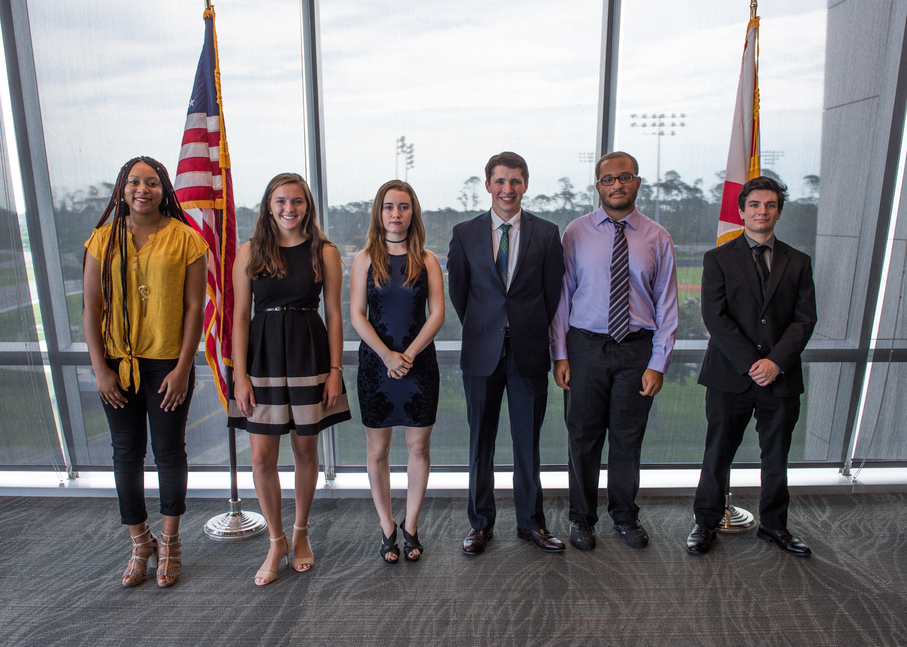
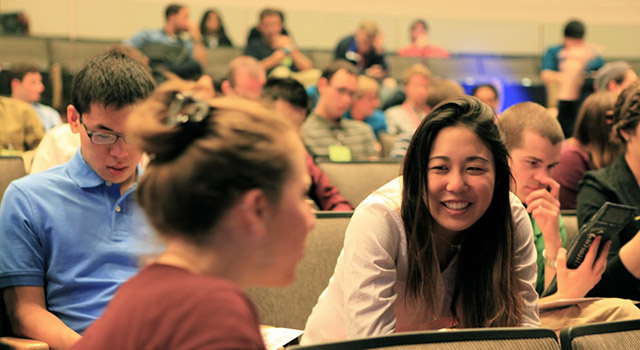
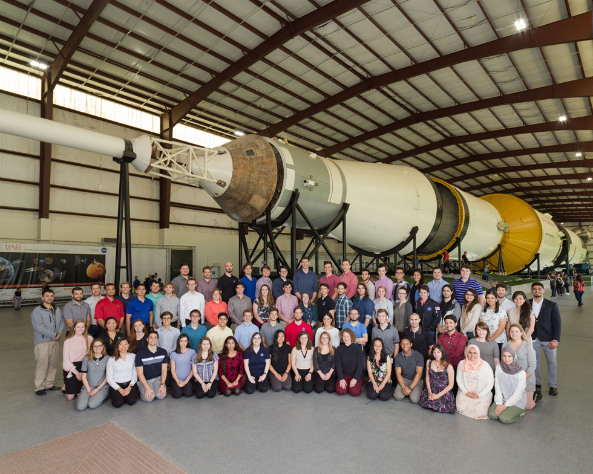
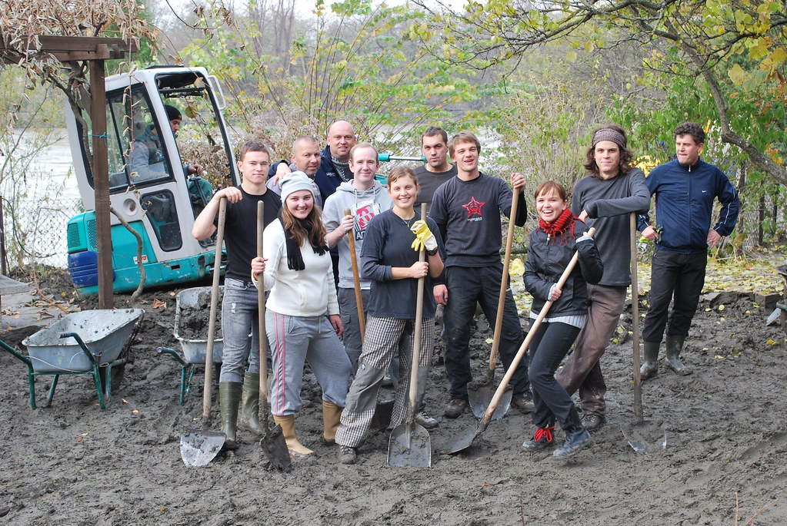

The Intership program is one programs offered in here at Think Global Think Global has connections with different companies in the world which can easily help you to get an internship to your dream compnay. Think Global can help customise a internship programme for you which will benefit the professional skill you are after ... Internship Programmes can help you gain experience on your future profession which can help advance your career Think Global can obtain the internship you require in a country of your choice
Study Abroad!
 Think Global has connections to majority of universities across the world. Most univerisities requires their students to take a lomitied amount of courses but some lets you take as much as you could. Think Global enourgaes its students to choose a subject that is not offered to their home country to have a more feel... of experience. Most universities have certain prerequistes that you have to take before entering a course but this is not worry if you have not done the course before as it will be available as a course. Studying abroad helps enhance your knowledge with education but also with culture and language. This will help you to broaden you perspective on different people and different cultures.
Working Abroad
A working holiday is a cultural exchange concept which allows you to work abroad on a special, government-issued ‘working holiday visa. You’ll earn a local income to fund your travels and have the freedom to explore the country for longer than the average tourist. It’s the perfect opportunity to travel, live like a local... and immerse yourself in a different culture. You’ll learn another language, discover unique traditions, make new friends and create a never-ending bank of incredible moments on this life-changing experience. Embark on a journey of self-discovery and gain international work experience that will look great on your resumé/CV on a working holiday
Volunteer
 Volunteering is one the greatest act of man. Helping others withput expecting anything back. Think Global can help you connect to volunteering groups that travels around the world to help people in need. Volunteering is great way to learn new skills and earn ... opportunities that can help benefit you in the future. It makes you feel happiness and fulfillness in life. It can help feel healthier mentally and emotionally. Volunteering help you boarden your understanding on the hardships and small happiness of people doesn't have much. Through volunteering, you can meet new people, learn a new language, understand a culture, and many more.
Take a Gap Year!
A gap year can be many things. Its a great way to take a brea, complete your bucket list , and travel. Think Global can help you achieve all of that. Explore what the world has to offer. A gap year can be use in other different ways: take up a full time job, reflect on what do you want to study, and many more. A great way to use your gap year is travel the world. Backpacking through Europe, Learn the unique cultures of Asia,... Explore the African Desserts, or feel the Chill of the poles. Travelling allows you to learn different cultures and help you to be more understanding of other. This is Think Global's vision is to have a world where people are in peace with each other and understand our difference. By helping you get to where you want is one step closer for Think Global to achieve it's vision.
 A gap year can be many things. Its a great way to take a brea, complete your bucket list , and travel.
A gap year can be many things. Its a great way to take a brea, complete your bucket list , and travel.